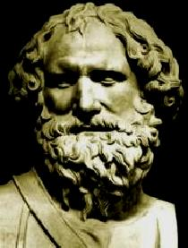
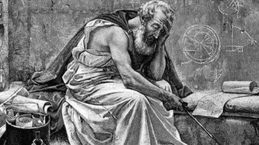

Origin
Archimedes was a Greek scientist, mathematician, physicist, engineer, inventor and astronomer who lived in Syracuse on the island of Sicily (now Italy). He was born around 287 BC in the city of Syracuse in the family of a wealthy merchant Phidias. His father and grandfather were famous mathematicians and engineers, and they probably inspired Archimedes to scientific research.
Start
Archimedes began his scientific career at a young age. His father, Phidias, was a wealthy merchant who was engaged in trade and tax collection in Syracuse, one of the most important cities of ancient Greece. Phidias was also known as a scientist and engineer, and probably inspired his son to study science and mathematics.
In his youth, Archimedes was educated at the Library of Alexandria, where he studied mathematics, physics, astronomy, and other sciences. He then returned to Syracuse, where he continued his research and inventions.
World famous
Archimedes became known throughout the world for his scientific discoveries and inventions, which made a significant contribution to the development of science and technology.
One of his most famous discoveries is the law of Archimedes, which describes the force of buoyancy of bodies in a liquid. He also developed methods for calculating the volume and area of various geometric shapes, including the circle, sphere, and cylinder.
Archimedes also invented many mechanisms and devices, including block and winch mechanisms that were used to lift weights, as well as water clocks and hydraulic systems. He also developed weapons and devices for the defense of the city of Syracuse during the war.
The inventions and discoveries of Archimedes were known not only in Greece, but also in other countries, including Rome. In many countries, his scientific works have been studied and translated into various languages, and his inventions have been used for various purposes, from lifting weights to managing water and measuring time.
Great Legacy
The legacy of Archimedes remains important and relevant to this day. He made a significant contribution to the development of mathematics, physics, mechanics and other fields of science, and his work continues to be a source of inspiration for scientists and researchers around the world.
Archimedes' law, which he discovered over 2,000 years ago, remains one of the fundamental laws of physics and is widely used in science and technology. His methods for calculating the volume and area of various geometric shapes are also used in many fields, including construction, design, and manufacturing.
The inventions and mechanisms developed by Archimedes, such as the winch mechanism and hydraulic systems, remain important in engineering design and technology. His work in mechanical theory also contributes to various fields of science and technology, including aerodynamics, automotive and space engineering.
Archimedes also made important discoveries in mathematics, including the study of numbers and their properties, and the development of methods for approximating and integrating functions. His work in geometry, such as measuring the area and volume of various figures, remains fundamental to the study of geometry today.
In addition, Archimedes was known for his technological inventions such as water clocks and cannons for the defense of the city of Syracuse. His contribution to the development of technology, including mechanics, hydraulics, architecture and other fields, remains significant.
Archimedes is remembered today as one of the greatest scientists of all time, and his legacy continues to be important to science and technology.
End of Path
The life of Archimedes ended tragically. In 212 BC, Syracuse was captured by Roman troops. According to legend, when a Roman soldier entered the room where Archimedes was working on his experiments, he said, "Don't touch my circles!" ("Noli turbare circulos meos" in Latin). However, the soldier did not understand his words and killed Archimedes. The story, however, could be different, and in fact the exact circumstances of the scientist's death are unknown. The death of Archimedes was a great loss for science. His brilliant discoveries and ideas continued to influence scientific development for many centuries after his death. Modern science still uses many of his methods and theories, and his legacy continues to inspire scientists and researchers around the world. One of the greatest scientists of all time, and his legacy continues to be important to science and technology.
